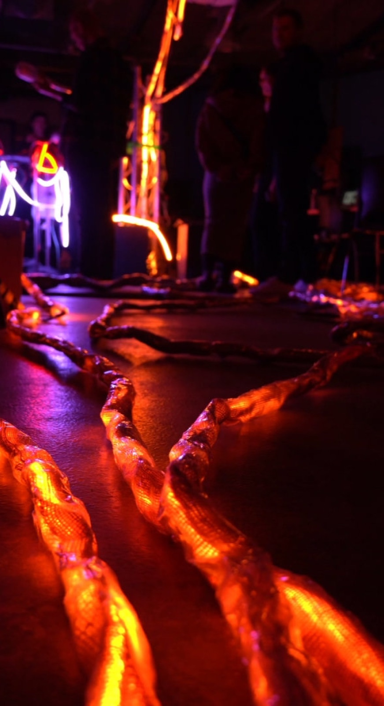
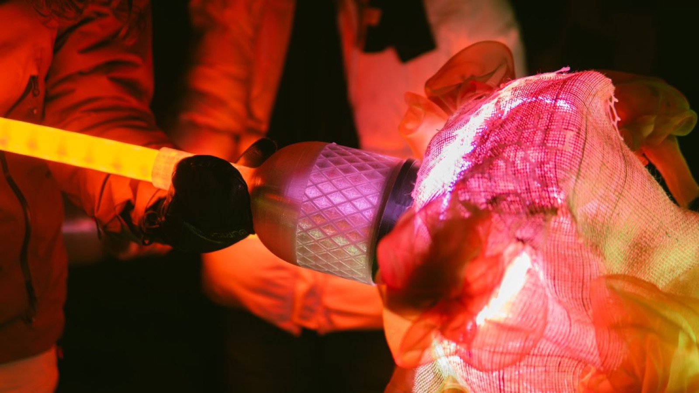
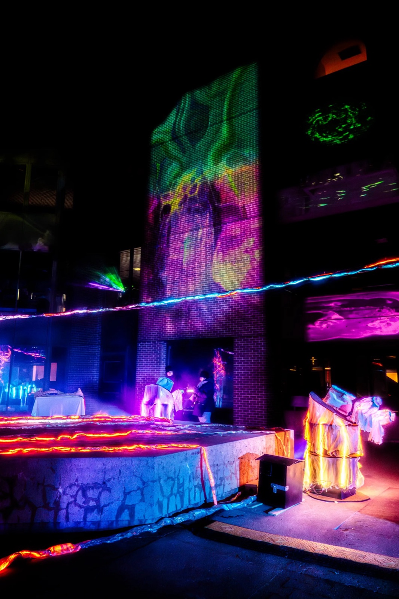
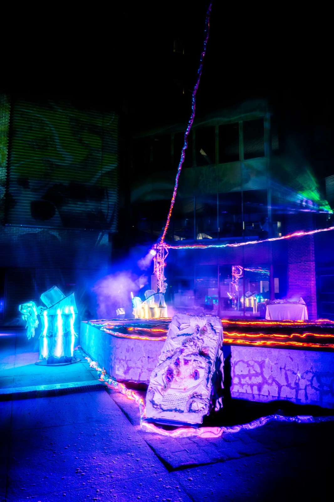
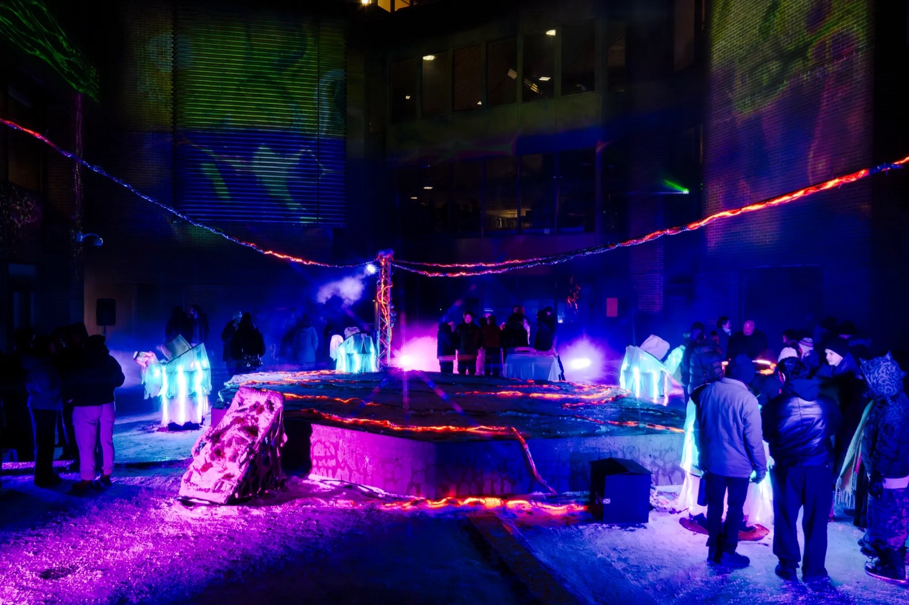

(Processus)
Du biome à la Nuit blanche
Les moments clés, du concept à la présentation publique.
-
Un réseau d'énergie
Technologie et nature se sont hybridées jusqu'à former un réseau énergétique commun. En reliant ses composantes, les visiteurs contribuent à la vitalité du biome.

-
La voix du biome
Avec une équipe de deux personnes qui produisaient des sons avec moi, j'ai composé la musique et conçu l'univers sonore, puis j'en ai assuré l'intégration dans l'installation.
Synapse — conception sonore 
En studio -
Les séances photo
J'ai coordonné, avec Noémie Poirier, les séances photo de l'équipe de création qui ont servi à la promotion du projet.


-
Dans la cour du clocher
En partenariat avec Lumino et le Quartier des spectacles, l'UQAM a présenté Synapse dans la cour du clocher, de 19 h à 1 h, gratuitement et ouvert à tout le monde.

Photo : Loïc Delorme 
